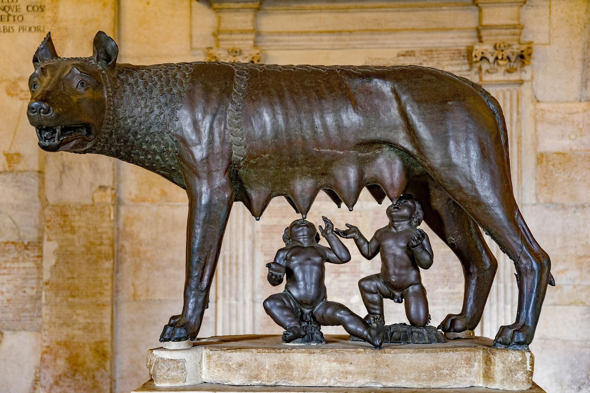

História Mitológica de Roma
Na mitologia romana, os gêmeos Rômulo e Remo, filhos do deus Marte e de Reia Sílvia, foram jogados no rio Tibre a mando do rei usurpador Amúlio. Salvos e amamentados por uma loba, cresceram, destronaram Amúlio e devolveram o reino ao avô Numitor. Ao decidirem fundar uma nova cidade no local onde foram resgatados, os irmãos entraram em conflito. Rômulo acabou matando Remo, tornando-se o único fundador e primeiro rei de Roma.

Por que os Triunviratos ocorreram?
A Monarquia Romana foi o primeiro período da história da Roma Antiga, estendendo-se tradicionalmente de 753 a.C. a 509 a.C.. A cidade foi governada por uma sucessão de sete reis, em um sistema no qual o poder não era hereditário, sendo o monarca escolhido pelo Senado e confirmado pela Assembleia Curiata. O rei concentrava as funções de chefe militar, juiz supremo e líder religioso, mas governava com o apoio e a fiscalização do Senado — conselho formado pelos chefes das famílias aristocráticas — e da Assembleia, composta pelos cidadãos organizados em cúrias.
A sociedade romana dessa época era rigidamente hierarquizada. Os conflitos gerados por conta dessa desigualdade levaram ao acontecimento dos Triunviratos, tópico de nosso formulário de perguntas.
O que foi Triunvirato?
Os triunviratos foram alianças políticas formadas por três líderes romanos para concentrar poder durante a crise da República Romana.
O Primeiro Triunvirato, criado em 60 a.C., uniu:
- Júlio César
- Pompeu
- Crasso
Mas terminou devido às rivalidades entre seus membros.
O Segundo Triunvirato, formado em 43 a.C. por:
- Otávio
- Marco Antônio
- Lépido
Após a morte de César, teve como objetivo vingar seu assassinato e controlar Roma. As disputas internas também levaram ao seu fim, e a vitória de Otávio sobre Marco Antônio marcou o encerramento da República e o início do Império Romano.